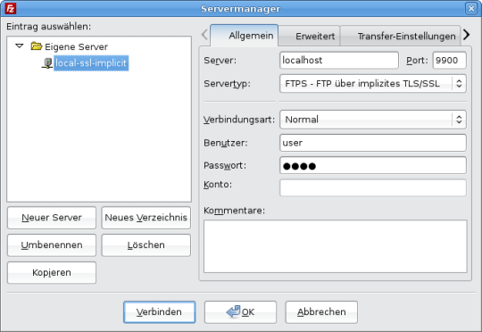
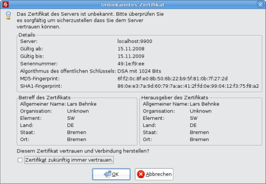
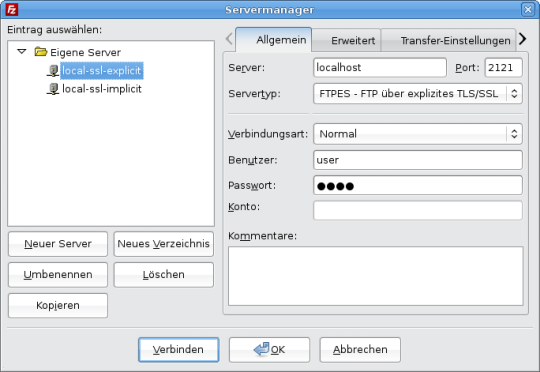
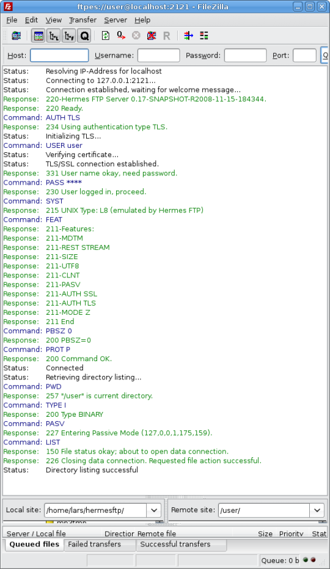

keytool is a utility shipped with your Java SDK. It enables you to manage keys and certificates used for self-authentication or data integrity and authentication services. The security related data is stored in a so-called keystore, which is basically a file in your local file system. Besides your own private/public key pairs also public keys of your communication partners reside in this file. If you like to learn more about the keytool or keystore, please visit this site.
Hermes FTP Server makes use of the keystore implementation provided by Sun Microsystems for negociating secure connections with FTP clients. If you wish to enable SSL security and send your own self-signed certificate to the client, change into the Hermes FTP installation folder and issue the following command from the command line.
On unix systems:chmod 755 *.sh ./create_keystore.sh
On windows systems:
create_keystore.bat
The utility asks for some personal data, which are included with the certificate. Finally, a file called keystore is created in the Hermes FTP home directory. Note that keystore and key share the same password "secret". The certificate is valid for 365 days.
If you would like to have more control over the keystore and key parameters you can create the keystore manually:
keytool -genkey -alias hermes -keyalg DSA -keystore keystore -validity 365 -storepass secret -keypass secret
Of course, you can choose whatever parameters you like. However, keystore password and key password have to be equal.
Now that the keystore is set up, you may need to modify the configuration file hermes-ctx.xml . Find the following lines and change filename and password:
... <prop key="ssl.keystore.file">keystore</prop>
<prop key="ssl.keystore.password">secret</prop> ...
Please note that the created self-signed certificate is inappropriate in a production environment. If security is essential, you should apply to a certificate authority for a properly signed server certificate, and then import it into the keystore.
Any FTP client software that supports FTP over SSL/TLS (FTPS or FTPES) is required to establish a secure connection to HermesFTP server. Don't mix FTPS up with SFTP. The latter one requires SSH and is currently not supported by HermesFTP.
Here is a short guide how to set up a secure connection using
the (highly recommended) Filezilla FTP client.
Let's start with setting up an implicit FTPS connection.
Implicit FTPS is an older, but still widely implemented, style in which
the client connects to a different control port,
and an SSL handshake is performed before any FTP commands are sent.
The entire FTPS session is encrypted.
Implicit FTPS does not allow for negotiation and the client should
immediately challenge the FTPS Server with the TLS/SSL handshake.
The Internet Assigned Numbers Authority (IANA) officially designates
port 990 as the FTPS control channel port and port 989 as the FTPS
data channel port. You can change the default port by setting
the option ssl.port.implicit.
Open the server manager and create a new connection. Choose server name and ftps port the server listens to (e.g. 990 or 9900). The server type should be FTPS. Enter user name and password and click connect.
When connecting the first time the client asks you to accept the server certificate.
The second way to establish a secure connection is explicit FTPS (aka FTPES, aka AUTH TLS). This is the preferred method according to RFC 4217. The client connects using plain text commands on port 21 and may negotiate a secure TLS connection during the FTP setup or at any time thereafter by sending the AUTH command.
Again, open the server manager and create a new connection. Choose server name and ftp port the server listens to (e.g. 21 or 2121). The server type should be FTPES. Enter user name and password and click connect.
After connecting successfully the ftp client console should show this sequence of commands:
